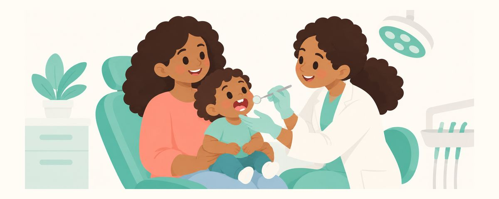

Baby's First Dental Visit by Age One: When to Go and What Happens
Plan the first dental visit within 6 months of the first tooth, by the first birthday. What happens, when to book, how to prepare, and if your baby cries.
At a glance
- Go within 6 months of the first tooth, by the first birthday
- It's about getting comfortable and prevention, not treatment
- White band, brown spot, or a hurt tooth? Go right away
"My baby only has a few teeth. Do we really need the dentist already?" Lots of parents ask this. The first dental visit isn't about fixing a hurting tooth. It's a day for your baby to get comfortable with the dentist and for you to learn how to care for those teeth. Here's when to go and what happens there.
The first visit isn't about treatment
The first dental visit is recommended within 6 months of the first tooth, and no later than the first birthday. As soon as even one tooth comes in, it can get a cavity, and cavities in baby teeth move fast.
The first visit is all about getting comfortable and preventing problems. The dentist usually goes over things like these with you.
- How the teeth are coming in, and how the gums and mouth look
- Early signs of cavities, like a white band or brown spot
- How to brush and how much fluoride toothpaste to use
- Eating habits like feeding, solids, and snacks
- Habits like pacifiers or thumb-sucking
The exam is usually quick. A baby may sit on your lap, or you and the dentist may sit knee to knee while your baby lies back toward the dentist so they can see inside the mouth. All you need to do is hold your baby's hands.
The earlier you go, the more your baby remembers the dentist as a familiar place, not a scary one. If the first visit comes after a cavity has formed, that first experience is treatment, and that's much harder for both baby and parent.
Here's how to get ready before the first birthday
- Find a pediatric dentist, or a general dentist who sees infants, and book a visit.
- Pick a time when your baby's at their best. Avoid right before a nap or when they'll be hungry. Mornings usually work well.
- Jot down the toothbrush and toothpaste you use, how often you feed and whether there are night feeds, and snack habits. Writing your questions down ahead of time helps you remember to ask them all.
- Bring a favorite stuffed animal or blanket.
At home, start playing an open-wide-and-say-"ahh" game a few days before. Counting a stuffed animal's teeth, or opening your own mouth wide in front of a mirror first, can make the new situation feel a little less strange.
Your words matter too. Phrases like "It won't hurt" or "No shots" can actually put the idea of pain in your child's head. Instead, keep it short and upbeat, like "The dentist is going to count your teeth!" If you've had scary experiences at the dentist yourself, it's best not to talk about them in front of your child.
It's okay if your baby cries during the visit. It's completely normal. Crying in front of a stranger and bright lights is to be expected, and the dentist can still do the exam. When it's over, give a big hug and say what a great job they did.
After the visit, end on a happy note. A walk or a favorite game helps your child remember dental days as good days. It's better to give a snack after the visit rather than before the exam.
Write down what you heard that day so you don't forget. Noting the toothpaste amount, brushing position, advice about night feeds and snacks, and when to come back makes it easier to put into practice at home right away. After the first visit, keep up with regular checkups at the interval your dentist sets based on cavity risk (often every 6 months) to keep watching your baby's teeth.
United States guidance
US: Establish a dental home by the first birthday
The AAPD recommends establishing a dental home within 6 months of the first tooth and no later than the first birthday. Children enrolled in Medicaid or CHIP are covered for preventive dental care, and many private dental plans include infant preventive visits. Check your plan's coverage.
Frequently asked questions
My baby only has a few teeth. Do we really need to go now?
Even one tooth can get a cavity, so no matter how many teeth there are, a visit within 6 months of the first tooth is recommended. Going early lets you learn how to care for the teeth before problems start.
Can't we just wait for a public checkup for young children?
Many countries offer public checkups for young children, so check what's available where you live. But if the first tooth has already come in, it's best not to wait and to make a first visit to a nearby dentist around the first birthday.
Do parents go into the exam room?
Babies are usually examined on a parent's lap. For slightly older children, it depends on the office, so ask when you book.
If my baby cries, can the dentist still do the exam?
Yes, the dentist can still look inside the mouth while your baby cries. Crying is a natural reaction at this age, so there's no need to feel sorry about it.
Book a visit now if
- The first birthday has passed and you haven't been to the dentist yet
- You see a white band or brown spot on a tooth
- Your child seems to hurt when eating or chews only on one side
- A fall or bump injures a tooth
- The gums stay swollen or keep bleeding for more than a few days
Get these at the right time
Enter your child's birth date (or due date) in the Tooth Calendar app and these articles arrive as reminders when they matter. Free, no sign-up.
Sources
The information in this article is for general educational purposes and does not replace professional dental care. Talk to a dentist about your child's condition.